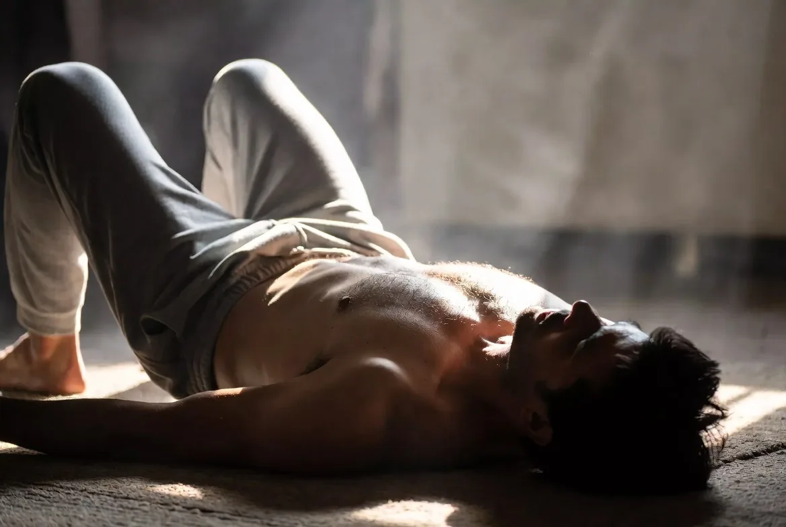
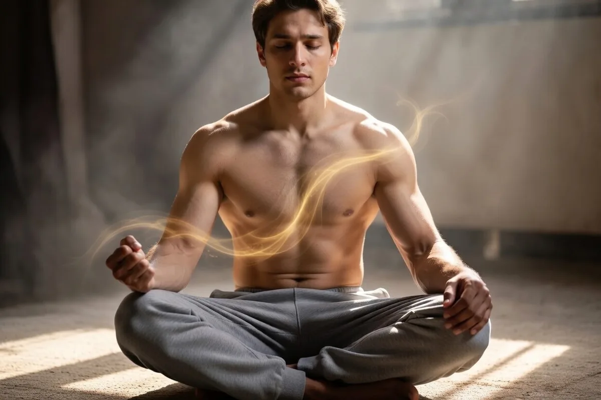
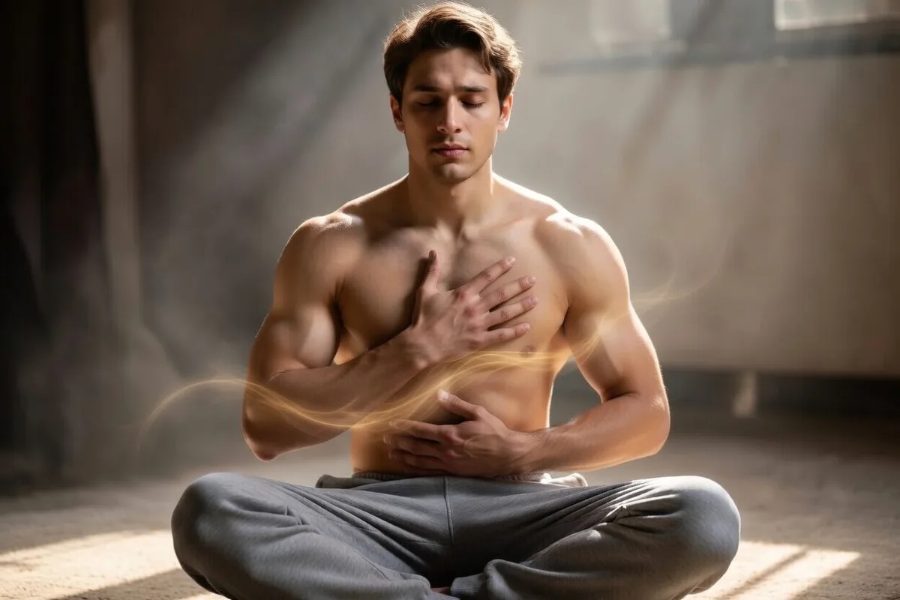
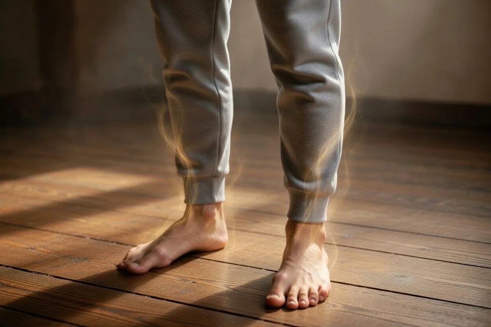

Упражнения для расслабления
и снятия мышечных блоков
Практические техники работы с телесным напряжением и психосоматическими зажимами — на основе концепции Вильгельма Райха
Если вы замечаете, что плечи постоянно подняты, челюсть сжата, а грудь будто «закрыта» — это не просто усталость. Ваше тело говорит вам что-то важное.
ОсновыЧто такое мышечный блок — и почему это важно
Вильгельм Райх, австрийский психоаналитик и ученик Фрейда, в середине XX века совершил важное открытие: психологические защиты имеют телесное выражение. Он назвал это явление «мышечным панцирем» — хроническим, неосознаваемым напряжением в определённых группах мышц, которое возникает как ответ на подавленные эмоции.
Говоря проще: когда мы долго сдерживаем гнев, страх, горе или тревогу, тело «запоминает» это напряжение. Мышцы как будто берут на себя роль сторожа — не давая эмоциям вырваться наружу. Со временем этот панцирь становится хроническим. Человек уже не осознаёт, что напряжён — это просто «нормальное» состояние его тела.
Мышечный блок — это не «зажатость характера» и не слабость. Это выученный способ выживания, который когда-то помогал. Задача терапии — не «сломать» панцирь, а помочь телу научиться новому — доверять и расслабляться.
Семь сегментов мышечного панциря
Райх выделил семь зон хронического напряжения, расположенных горизонтально, как кольца. Каждый сегмент связан с определёнными эмоциями и переживаниями.
| # | Сегмент | Где в теле | Связанные эмоции |
|---|---|---|---|
| 1 | Глазной | Глаза, лоб, затылок | Страх, настороженность, диссоциация |
| 2 | Ротовой | Губы, подбородок, горло | Подавленный плач, сдержанный крик |
| 3 | Шейный | Шея, язык, задняя поверхность | Злость, сдержанные слова |
| 4 | Грудной | Грудь, плечи, руки | Горе, тоска, сдержанная любовь |
| 5 | Диафрагмальный | Диафрагма, солнечное сплетение | Отвращение, сильный гнев, тревога |
| 6 | Брюшной | Живот, поясница | Страх нападения, злость, тревога |
| 7 | Тазовый | Таз, бёдра, ноги | Сексуальность, удовольствие, возбуждение |
Работа с нижними сегментами (тазовым, брюшным) может поднимать интенсивные эмоции. Если у вас есть травматический опыт — лучше начинать с таких упражнений под наблюдением специалиста, а не самостоятельно.

Как понять, что у вас есть мышечный блок
Прежде чем переходить к упражнениям, важно научиться распознавать сигналы тела. Вот что говорят мои клиенты, когда мы начинаем работу:
- «Я всегда хожу с поднятыми плечами» — блок грудного сегмента
- «У меня постоянно болит шея и затылок» — шейный и глазной сегмент
- «Мне тяжело дышать глубоко, дыхание поверхностное» — диафрагмальный блок
- «Я сжимаю зубы во сне» — ротовой сегмент
- «В животе постоянно тревога» — брюшной блок
- «Ноги как ватные, нет опоры» — тазовый сегмент
Если хотя бы несколько пунктов резонируют — вы на правильном пути, и упражнения ниже могут стать первым шагом к изменениям.
ПрактикаПрактические упражнения по сегментам
Эти техники я использую в работе с клиентами, которые приходят с тревогой, паническими атаками, хроническим стрессом и телесными зажимами. Выполняйте их медленно, без спешки, в тишине. Наблюдайте за ощущениями — это и есть главная «работа».
🔵 Сегмент 1–2: Глаза и лицо
- Сядьте удобно. Закройте глаза на 30 секунд.
- Откройте глаза максимально широко, как будто вы чем-то удивлены — и удерживайте 5–7 секунд.
- Медленно закройте и расслабьте мышцы вокруг глаз.
- Повторите 5–7 раз. После — посмотрите вдаль, не фокусируясь ни на чём.
- Положите пальцы на жевательные мышцы (перед ушами). Почувствуйте напряжение.
- Медленно откройте рот, опустив челюсть вниз — без усилий, под тяжестью собственного веса.
- Удерживайте 10–15 секунд, дышите носом.
- Добавьте лёгкий звук — мычание «ммм» с вибрацией в губах. Это активирует блуждающий нерв.
- Повторите 4–5 раз.
🔵 Сегмент 3: Шея
- Опустите подбородок на грудь. Почувствуйте растяжение в задней части шеи.
- Очень медленно — за 8–10 секунд — переведите голову вправо, запрокиньте слегка назад, потом влево и снова на грудь.
- Дышите свободно. Если встретили болезненную точку — остановитесь там и дышите 3–4 вдоха.
- 3 круга в каждую сторону.
🔵 Сегмент 4: Грудь и плечи
- Встаньте или сядьте прямо. Сведите лопатки вместе, раскройте грудь вперёд.
- Поднимите руки в стороны ладонями вверх — поза «открытости».
- Сделайте глубокий вдох — представьте, что дышите грудью, а не животом.
- На выдохе — медленно опустите руки и позвольте плечам упасть вниз.
- Обратите внимание: насколько трудно «открыться»? Есть ли сопротивление?
- Повторите 6–8 раз.
В работе с грудным сегментом могут подниматься эмоции — грусть, тепло, желание плакать. Это нормально и хорошо. Не останавливайте слёзы — это способ тела освободить накопленное.

🔵 Сегмент 5: Диафрагма
- Лягте на спину. Одну руку положите на грудь, вторую — на живот.
- Вдохните через нос на 4 счёта — живот должен подниматься, грудь — оставаться почти неподвижной.
- Задержите дыхание на 4 счёта.
- Выдохните через рот на 6–8 счётов, полностью опустошив лёгкие.
- Пауза 2 счёта. Повторите 10–12 циклов.
Диафрагма — главная мышца тревоги. Когда мы хронически в стрессе, она спазмирована, и дыхание становится грудным и поверхностным. Замедлить выдох — это буквально включить парасимпатическую нервную систему и выйти из режима «бей или беги».
🔵 Сегменты 6–7: Живот, таз и ноги
- Встаньте босиком. Ноги на ширине плеч, колени слегка согнуты.
- Почувствуйте, как стопы касаются пола. Перенесите вес немного вперёд, потом назад, вправо, влево.
- Медленно начните сгибать и разгибать колени — небольшие пружинящие движения.
- Добавьте дыхание: вдох — немного «оседаете», выдох — выпрямляетесь.
- Выполняйте 3–5 минут. Тело может начать слегка дрожать — это нормально, это разрядка напряжения.
Мелкое дрожание в ногах во время заземления — это не слабость и не патология. Это то, что Питер Левин называет «нейрогенной дрожью» — естественный способ нервной системы сбросить хроническое напряжение. Не подавляйте его.

Прогрессивная мышечная релаксация — базовый протокол
Это упражнение лежит в основе многих телесных практик. Его принцип: намеренно напрячь мышцу сильнее — и затем полностью отпустить. Контраст помогает ощутить разницу между напряжением и расслаблением.
Выполняется лёжа, в тихом месте. Каждую группу мышц напрягаем на 5–7 секунд, затем резко отпускаем и наблюдаем расслабление 30 секунд.
- Стопы и голени: сожмите пальцы ног, тяните носки на себя → отпустите.
- Бёдра и ягодицы: напрягите мышцы бёдер и сожмите ягодицы → отпустите.
- Живот: втяните живот и напрягите мышцы кора → отпустите.
- Кисти и предплечья: сожмите кулаки как можно сильнее → разожмите.
- Плечи: поднимите плечи к ушам → уроните.
- Шея: прижмите подбородок к груди → расслабьте.
- Лицо: зажмурьтесь, сморщите нос, сожмите губы → расслабьте всё лицо.
Когда упражнений недостаточно — признаки, что нужен специалист
Телесные практики — мощный инструмент самопомощи. Но есть ситуации, когда самостоятельная работа может быть недостаточной или даже контрпродуктивной:
- Упражнения вызывают острую тревогу или паническую атаку
- Вы чувствуете диссоциацию — «выход из тела», онемение, ощущение нереальности
- Телесные симптомы нарастают вместо того, чтобы уменьшаться
- В теле поднимаются сильные, захлёстывающие эмоции — особенно при работе с тазом и животом
- У вас есть история травмы, насилия или ПТСР
В работе с телесными зажимами и тревогой я совмещаю когнитивно-поведенческую терапию, ДПДГ и телесно-ориентированные техники. Это позволяет работать одновременно с убеждениями, эмоциями и телом — системно, а не по отдельности.

Как выстроить регулярную практику
Разовые упражнения дают временное облегчение. Устойчивые изменения требуют регулярности. Вот минимальный рабочий ритм, который я рекомендую клиентам:
- Утром (5–7 минут): диафрагмальное дыхание + сканирование тела — просто заметить, где напряжение
- Днём (2–3 минуты): «уронить плечи», разжать челюсть, сделать 3 глубоких выдоха
- Вечером (15–20 минут): прогрессивная мышечная релаксация или упражнения по нужному сегменту
Первые реальные изменения большинство моих клиентов замечают через 3–4 недели регулярной практики. Тело учится медленнее, чем разум — но зато надёжнее.
Хотите разобраться со своими телесными зажимами?
Запишитесь на бесплатную 15-минутную консультацию — обсудим ваш запрос и выберем подходящий формат работы
Записаться в Telegram → Отвечаю в течение нескольких часов · Без обязательств